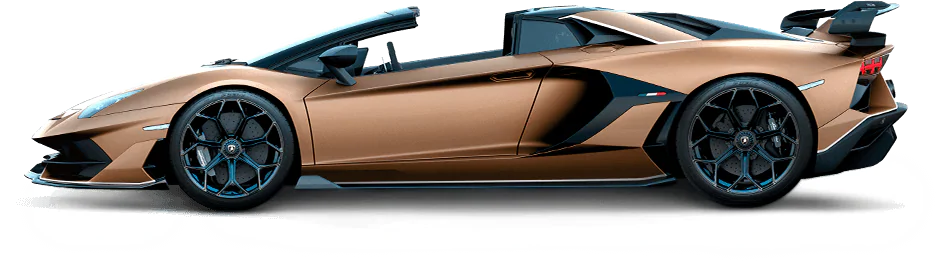
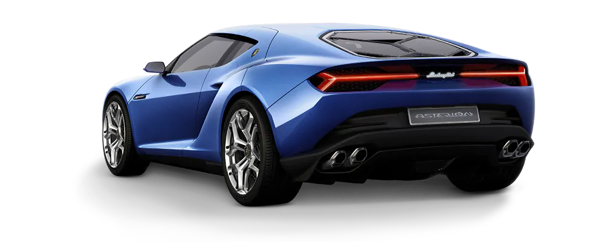

URUS
Lamborghini Urus is the world’s first Super Sport Utility Vehicle, in which luxury, sportiness and performance meet comfort and versatility. It offers best-in-class driving dynamics, alongside its unmistakable elegance of design. Urus embodies the characteristics of multiple souls: sporty, elegant and off-road, and has a suitability for everyday driving in a range of environments. With its surprisingly distinct engine sound, combined with high performance, Lamborghini Urus is anything but typical.
HURACAN
From our past, we've learned perfection. This is how the first model of the Lamborghini Huracán was born. More performance, more control, more innovation. The Huracán is equipped with a powerful V10 engine and the latest technologies to perform at its absolute best. Engineered to guarantee the best performance and control under any driving condition, it's easy to take to the limit, not to mention extremely fun, thanks to technology like the Lamborghini Doppia Frizione (LDF) dual clutch gearbox and the electronically-controlled four-wheel drive. Enjoy the best driving experience, ever. Discover all the Lamborghini Huracán models.
AVENTADOR
The Aventador has been created to anticipate the future, as demonstrated by the use of innovative technology, including a V12 engine and the extensive use of carbon fiber. The authentic design masterpieces together stark dynamism with aggression to produce a cutting edge carbon fiber monocoque. The interior of the Aventador combines high-level technology and luxury equipment with premium-quality materials, skilfully crafted with the expertise characteristic of the finest Italian traditions. A supercar family that has already become a legend in its own right. Discover technical specifications, dimensions, performance, and the detailed features of all the new Lamborghini Aventador models.

FEW OFF
The Few-Off Lamborghini are the most exclusive, limited editions to meet a small and select number of clients. Truly representing the state of the art in the domain of super cars, the Few-Off models express the highest Lamborghini spirit in every respect. Indeed, they are equipped with the most advanced features available in the fields of design and technology.
ASTERION
The Lamborghini Asterion is a unique vehicle, exploring unchartered territories with its curvy and sensual design. The luxury and the elegance are at the heart of the Asterion driving experience, as demonstrated by the use of special materials such as aluminium, forged carbon fiber and titanium.
